The mission You can start a session - you have to be able to stop one, photographed working
DevThrottle can now end a session, on purpose, and tell you what it did. You give a reason, it ends the agent process, it removes the row, it tells you in words which of those things happened, it tells you it did not touch your files, and it writes the reason down where it can be read back later. Every sentence in that paragraph is a photograph below, taken by a seat that did not build any of it.
What is proven
Five real sessions, with five real processes, were ended on a real fleet - from the command line, from the Director window, from the Cockpit in a browser, and finally by one session stopping another with its own credential. They all said the same sentence, because they all went through one route. Windows itself confirms the processes are gone. Uncommitted work in a session's worktree survived byte for byte. Every stop is in the audit ledger with the reason that was typed, and the last one names a session as the actor.
What is not proven
The fourth verdict, the one for a stop that cannot be described, was not producible on this stack. The phone application was not opened. Nothing crossed a machine boundary, and nothing here says anything about the hosted service or about one account being unable to reach another's sessions. Details in section 6.
Before this, the strongest thing you could say to a session was session done, which does not
stop anything - it leaves a note asking for the session to be removed later, and tells you nothing about
whether the note was read. On 1 September that was the only tool available when a session was doing the
wrong work in the wrong place.
Now there is a verb. It reads the same on every surface:
cc-devthrottle session stop 2ec53de8 --reason "photographed for the Stop a session quality report"
stopped 2ec53de8 - process 25068 ended, row removed
the worktree C:\ReposFred\devthrottle-qa-frames\_stack\scratch-repo was left untouched - it had no uncommitted changes
reason: photographed for the Stop a session quality reportThree things in that answer are the point of the whole mission. It names the process it ended, so the claim can be checked against the machine. It says what happened to your files without being asked. And it repeats the reason back, because the reason is now a required part of stopping anything and is kept.
The hosted Gateway deploys only from the main line, which this branch cannot reach until this report exists. So the whole stack was stood up locally and thrown away afterwards:
| Piece | What was used |
|---|---|
| Gateway | Published in Release from the mission branch at 84ba787e, on port 7997, with its own storage root inside a scratch directory. Authentication left ON, as in production: an unauthenticated call to /directors was refused with 401 before anything else was done. |
| Director | Built from the same commit into slot 6 and launched through the Windows scheduled task, never from inside this session. Slots 1 to 5 and the installed application belong to the owner and were not touched. |
| Command line | The branch's own command line, staged under a guard that refuses to run at all if the name resolves to the July build installed on this machine. Every command frame shows, in the frame, which one answered and which Gateway it was pointed at. |
| Sessions | Six throwaway sessions in three throwaway repositories created for this run - four for the eight frames, two more for the ninth. No real work, no client repositories, nothing of the owner's. |
| Teardown | Done twice, once per run, the same way each time. The Director was signalled and exited on its own - not killed. The scheduled task was unregistered, the Gateway process stopped, and port 7997 no longer answers. The owner's Director and his installed Gateway are the same two process identifiers at the end of this run as at the start. |
One deliberate improvement on the written recipe, and it is the safer one. The recipe registers a named instance in the machine-wide registry that every Director on this machine reads, and warns that a typo there lands your test Director in the owner's data tree. That write was refused by this session's permission layer - and it turned out not to be needed. The Director takes its shared root from the environment, and a root that is not shaped like an instance home is explicitly supported in the code as a legitimate isolated test rig. So this run gave its Director a root inside its own scratch directory and never wrote to the owner's registry at all. That file was compared against the backup at the end and is byte-for-byte identical.
The recipe's most dangerous step is avoidable. That belongs in the recipe.
These are the eight items of section 6 of the mission document. Each one says what it had to show, then shows it, then says what to look at. Nothing here is a line of prose standing in for a picture.
Frame 1
A session running, with its session identifier and its process identifier both visible in the same frame, so the reader can match them against everything that follows.
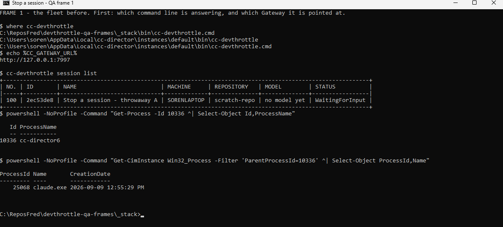
What to look atThe first two lines are the safety check, and they are in the frame
on purpose: the command line that answers is the staged branch build, and the Gateway it talks to is
http://127.0.0.1:7997 - the local one. The fleet holds exactly one session,
2ec53de8. The session row carries no process identifier, because the product does not keep
one there, so the frame asks Windows instead: the Director is process 10336, and the agent process
underneath it is 25068. Those two numbers are what the next four frames are about.
Frame 2
The command being issued, reason included, and the exact answer it gave back - in words, which is what Ruling 5 demands.
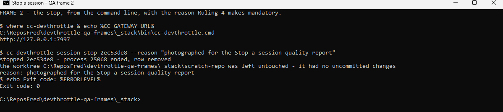
What to look atThe answer is three sentences of English, not a status code. It names process 25068 - the same number the operating system reported in frame 1 - says the row was removed, says the worktree was left untouched and why it could say so, and repeats the reason. The command exited zero.
Frame 2, beside it
The stop attempted with no reason, refused, and saying plainly that a reason is what is missing.
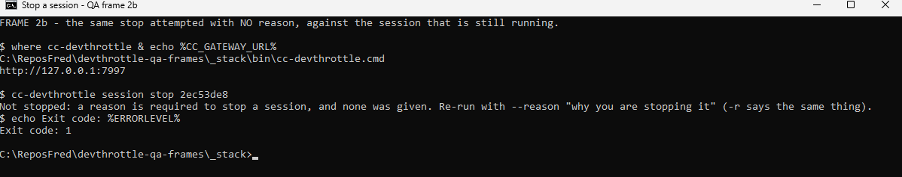
What to look atThis was run first, while the session was still alive, so the refusal is a refusal to stop something that could have been stopped. It names the missing thing - a reason - and names the flag that supplies it, and it exits non-zero, so a script cannot mistake it for success. Nothing was stopped and, as section 5 shows, nothing was written to the audit ledger.
Frame 3
session list without that row.
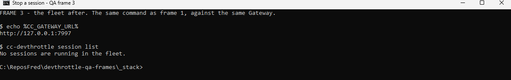
What to look atThe same command as frame 1, against the same Gateway, and the row is gone: "No sessions are running in the fleet." A row disappearing is the weakest of the claims, which is why the next frame exists.
Frame 4
The machine itself showing that process identifier no longer exists - the operating system's own tool, not the product's word for it.
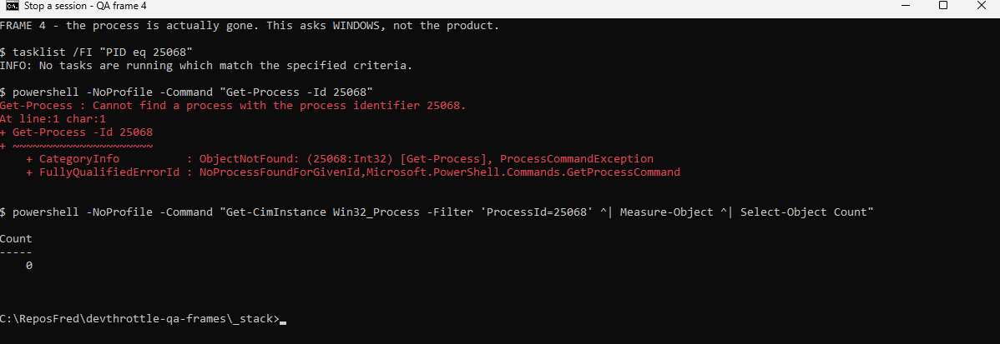
What to look atThree independent questions put to Windows about process 25068, the number the product itself printed. The task list says no task matches. The process query fails with "Cannot find a process with the process identifier 25068". The management query counts zero. This is the frame that separates a row being hidden from a session being ended.
Frame 5
The same command run again, succeeding quietly instead of erroring - and the report is to say which of the four verdicts came back and why that is the right one.
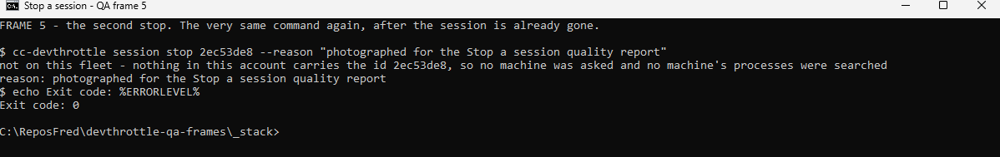
What to look atThe identical command, and it does not error. It exits zero and says
not on this fleet - nothing in this account carries the id 2ec53de8, so no machine was asked and no
machine's processes were searched.
It answers "not on this fleet", not "already stopped", and that is correct. The mission
document's illustration in section 6 sketches "already stopped", and the illustration is looser than the
ruling it illustrates. "Already stopped" is for a row that is still on the fleet with no process behind
it. Here the first stop removed the row, so there is no longer any machine to ask - and the answer says
exactly that, rather than pretending to have looked. A later reader should not file this as a mismatch.
Frame 6
The same thing done by clicking rather than typing, with the reason it asked for and the answer it showed.
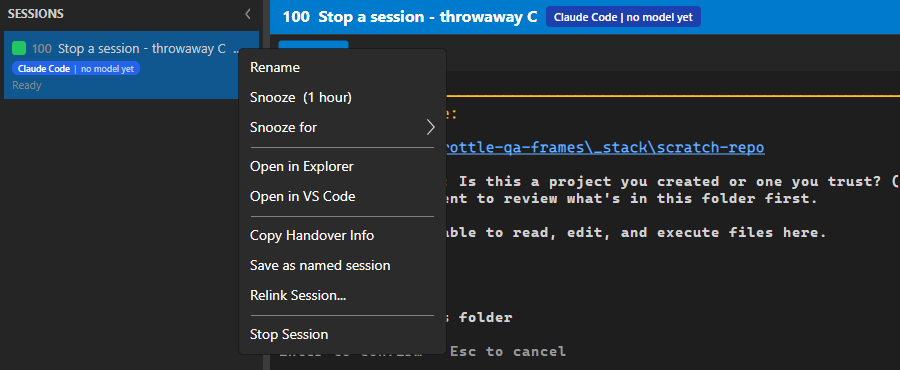
The control on the session's own menu. It says Stop Session - the same word the command line uses. It used to say Close, which described the row disappearing rather than the session ending.
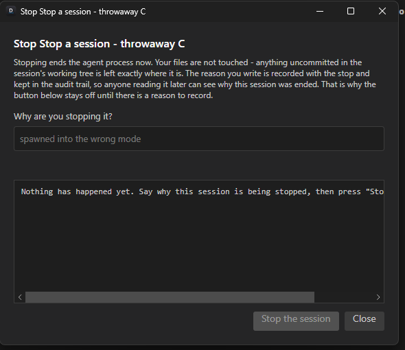
Before anything is typed. Two things are worth seeing here: the button to stop is off until there is a reason to record, and the answer box says "Nothing has happened yet" rather than sitting empty and ambiguous.
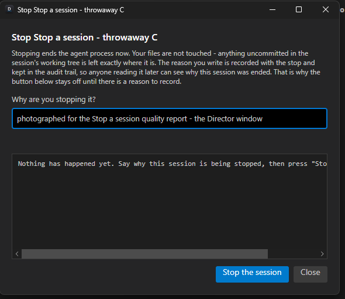
With the reason typed, the button comes on.
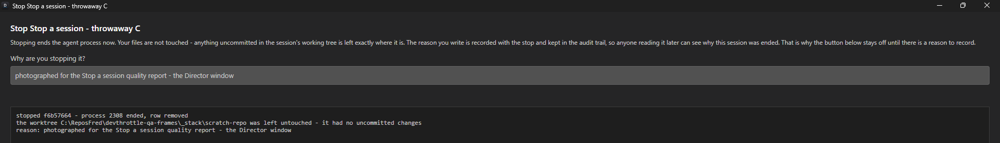
What to look atThe answer is the same three lines the command line printed
in frame 2, for a different session: stopped f6b57664 - process 2308 ended, row removed, the
worktree left untouched, and the reason. The window is not composing its own sentence; it is showing the
Gateway's. When this dialog was closed, the session's row had already left the rail on its own.
finding The dialog had to be maximized to read that answer.
At its default size the answer sits in a box with a horizontal scrollbar and the second line is cut off
mid-sentence. The words are there, which is what the ruling requires; the window makes the operator work
for them. Recorded, not fixed.
Frame 7
The same again from the web - and the proof that the controls went through one route rather than growing a second implementation, said from what was seen rather than from what the code claims.
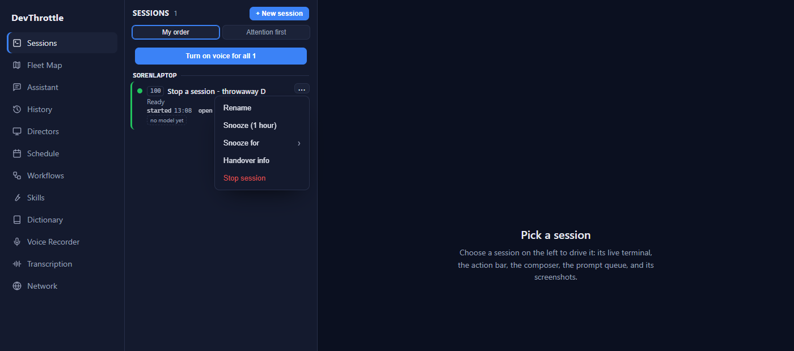
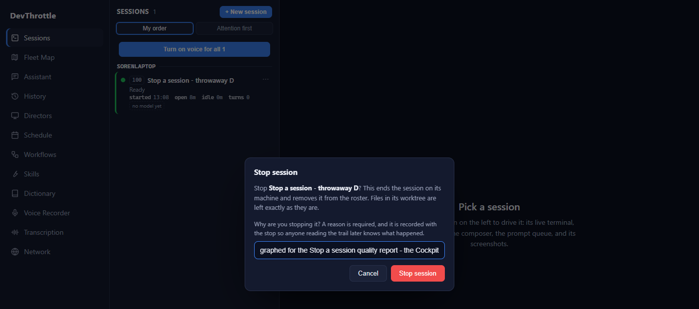
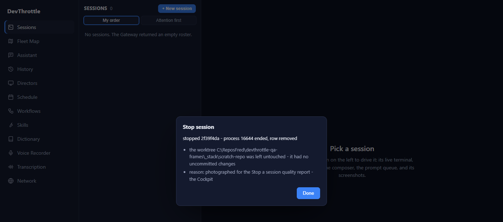
What to look atSame word on the control - Stop session. Same
question asked, in the same terms: a reason is required and it is recorded. Same answer, rendered as a
headline and its detail lines: stopped 2f39f4da - process 16644 ended, row removed, the
worktree untouched, the reason. Behind the dialog the roster has already dropped to zero.
How I know it is one route and not a second implementation. The browser was watched while
it did this. Across the whole run it issued exactly one request that was not a read:
POST /sessions/2f39f4da-5c60-4470-9510-b4e1e9136496/stop - the same verb, on the same route,
that the command line uses. Not a delete, not a local kill, not a second door. That is the observation;
the identical wording in three surfaces is the corroboration.
Frame 8
A session stopped while it has uncommitted changes. The stop goes through without argument, the answer names the worktree and says the changes were left untouched - and the frame after it shows those changes still on disk.
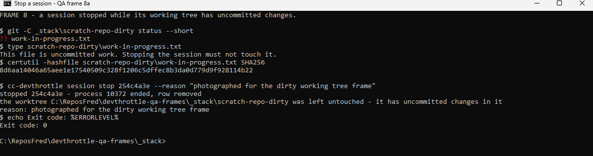
Before the stop: one uncommitted file, its contents, and its hash. Then the stop, which goes through with no argument and no extra confirmation - Ruling 2, which is the owner's - and whose second line names the worktree and says it has uncommitted changes in it.
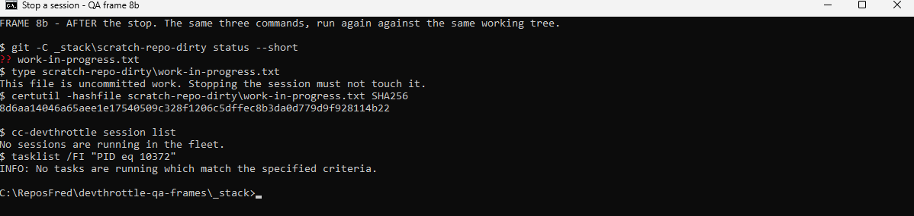
What to look atThe same three commands, run again after the session was ended. The
file is still uncommitted, still says the same thing, and its hash is character-for-character the one in
the frame above: 8d6aa14046a65aee...928114b22. Underneath, the row is gone from the fleet and
Windows says process 10372 no longer exists. The session ended; the work did not.
The first version of this report named a gap in section 8: every stop above was made with the machine's own credential, so the permission the owner personally granted - that any session may stop any other, as long as a reason is recorded - had unit tests behind it and no photograph. The Architect asked whether that one frame could be taken cheaply. It could, and this is it.
The stack was rebuilt from the same commit for this frame alone, and the run needed nothing that the eight frames above did not already need. Two throwaway sessions: B, an ordinary agent session, and A, a session whose own process is a plain shell - which is a kind of session the product already supports, and which matters here because it lets a session act without an agent deciding anything. A holds the credential it was born with. Nobody typed it, nobody read it, and it is not in the picture.
Frame 9
A session using its own key rather than the machine's, with the audit row afterwards naming a session as the actor - and, in the same frame, that same key refused on the legacy door, which is what keeps "an agent can only ever stop with a reason attached" true.
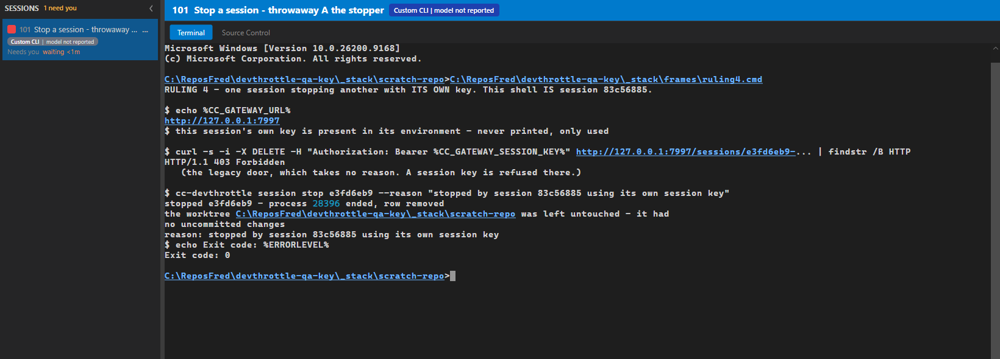
What to look atFour things, in one shell, in one frame.
Whose shell this is. The window is the Director, the selected session is
throwaway A the stopper, and the prompt inside it is that session's own process. The Gateway it
is pointed at is the local one.
The credential. The line confirms the session's own key is present in its environment
and says plainly that it is never printed. It is not shown anywhere in this report, and it did not need
to be: the two answers below prove which credential was used better than showing it would.
The legacy door refuses it - HTTP/1.1 403 Forbidden. That is the older
delete route, the one that takes no reason. The machine's own credential is allowed through there; a
session's key is not. So the refusal is itself the proof that the credential in play is a session's, and
it is the mechanism that makes the owner's condition hold: the only door open to an agent is the one that
demands a reason.
The stop goes through. Same verb, same required reason, same three-line answer as every
other surface: stopped e3fd6eb9 - process 28396 ended, row removed, the worktree left
untouched, the reason repeated back. Exit code zero. In the rail on the left, session B's row is already
gone - only the session that did the stopping is left.
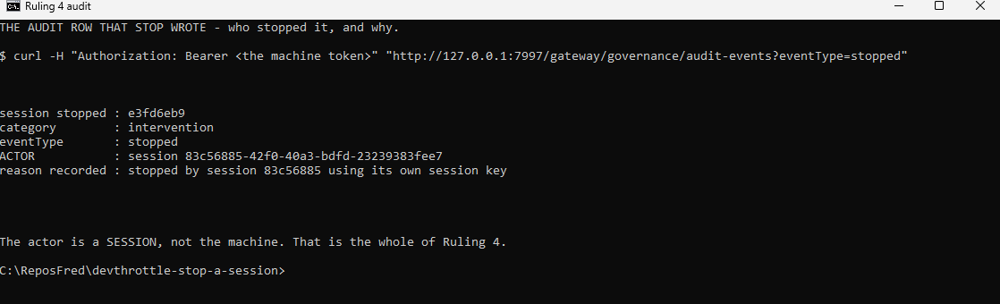
What to look atThe row this stop wrote. Every other row in this report says the
actor was the machine. This one says actor : session 83c56885-42f0-40a3-bdfd-23239383fee7 -
the session that did it, by name, beside the reason it gave. That is the whole of Ruling 4: the
flexibility to let any session stop any other, and a trail that says who did it and why.
The owner allowed any session in the account to stop any other, on the condition that the reason is recorded. So the recording is not a detail of this feature - it is the thing that makes the permission safe. Every stop above was read back out of the Gateway's governance ledger afterwards:
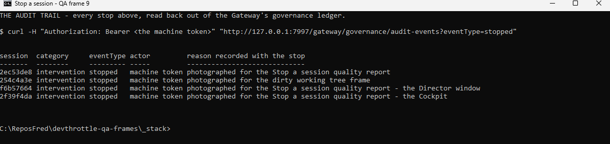
What to look atFour stops above, four rows here, in the order they happened, each carrying the exact reason that was typed into whichever surface did the stopping - including the two typed by clicking rather than by command. Each is categorised as an intervention and named as a stop, with an actor. The refused stop wrote nothing, which is right: nothing was stopped, so there is nothing to record.
This section is the honest half of the report and it is longer than it is comfortable to write.
This was the gap when the report was first written, and section 4 closes it: a session stopped another session with its own credential, was refused the door that takes no reason, and left an audit row naming itself. What that frame does not cover is the ordinary case of an agent deciding to do it - the acting session's process was a shell rather than a coding agent, chosen so that no agent's judgement sat between the credential and the command. The credential path through the Gateway is identical either way, and it is the credential the permission is about; but nobody has yet watched an agent choose to stop another agent.
Ruling 3 gained a fourth answer for the case where the stop happened but nothing honest can be said about it: an older Director on the other end, a liveness check that threw, or no process identifier to check at all. None of the three was produced here. The first needs a Gateway from this branch talking to a Director from an older one, and this stack builds both halves from the same commit. A verdict nobody has seen in the field is a verdict on trust.
The phone shares the same stop function as the Cockpit and was changed with it. It was never opened. The eight frames do not ask for it and I did not add it.
Everything ran on one machine, against a locally hosted Gateway that resolves every request to a single tenant. Nothing was stopped across a machine boundary, and this report says nothing about the hosted, multi-tenant path or about one account being unable to reach another's sessions.
Said plainly, because it changes what the frames prove. The Director window was driven by simulated mouse clicks and keystrokes from this session, not by a hand. The Cockpit was driven by a browser engine running without a visible window, on a page it rendered for real. Both are the real controls, in the real product, doing the real work - but neither is a person, and neither would catch something that only a person looking at the screen would notice.
On this self-hosted Gateway the Cockpit could not be reached the documented way. The break-glass login page takes the machine token and mints it into a cookie, and that cookie is enough to be served the Cockpit's files - but the application itself then sent the browser to a sign-in screen that wants to enrol the device against the hosted site. That is the owner's real account on the public service, and this run must not touch it. So the browser was given the same machine token as its stored credential directly, which the Gateway accepts. The frames are real; the door was not the front one. A self-hosted owner following the recipe would hit this wall, and it is worth an issue.
A frame was taken of the owner's live fleet, and it was deleted before it was committed. Two Directors run on this machine - the owner's and the throwaway one this run built - and their windows have the identical title. The first capture selected the window by title, matched his, and photographed his real roster: repository names, session names, the lot.
It was read, recognised and deleted within one step, and it never reached the repository. The control that caught it is the one the Architect marked non-negotiable: read every image before you commit it. Nothing else would have caught it - the capture succeeded, the file looked normal, and the window title was right.
Every capture after that selects its window by process identifier, and refuses to fire unless that exact process is in front. A previous quality seat hit the same class of trap from a different direction - an installed command line silently answering from the hosted Gateway - and its warning is why this one was looking. This is now twice. The trap is not the mistake; the trap is the machine.
Two smaller things, recorded rather than fixed:
/c. Loading that shows the Cockpit's own frame with "Page not found" in it; the
sessions page is at /sessions. Cosmetic, and confusing to anyone repeating the run.Sixteen sessions, across six phases, running two families of coding agent. Fifteen were counted when the roster was written; this quality seat is the sixteenth. Fifteen of the sixteen come from the family that wrote the code. The one that does not is the Inspector, and that is the whole point of it: the rule this fleet runs by says the seat that inspects the work must come from a different family than the seats that wrote it, because an agent reviewing its own family's work shares too much of its judgement to be a check on it.
That one session found eight real defects, four of them the most serious grade, in a branch whose builders had every one of them reported green. Three of the frames above - the second stop, the Director window, the Cockpit - sit directly on top of those fixes. The quality seat before this one was stood down before it captured a single frame precisely because the defects sat under the frames it was about to take.
| # | Phase | Seat | Session | Family | What it did |
|---|---|---|---|---|---|
| 1 | Design | Architect | e66d53fb | The building family | Settled the rulings in writing before any code was written; ruled on every phase and on the inspection. Replaced mid-mission for reporting to the owner too often rather than for any wrong decision. |
| 2 | A | Manager | ee59e5d0 | The building family | Drove the Director's honest answer and the command line; demanded the parked test run that exposed a cross-account isolation regression. |
| 3 | A | Worker | not recorded | The building family | Made the Director answer a structured verdict instead of two true-or-false values. |
| 4 | A | Worker | not recorded | The building family | Built the stop route, the sentence it writes, the refusal, the permission entries and the audit record. |
| 5 | A | Worker | not recorded | The building family | Built the two commands. |
| 6 | B | Manager | 578d8e29 | The building family | Drove the controls, and stood up the local stack that closed the gap where nothing had ever stopped a real session. |
| 7 | B | Worker | not recorded | The building family | The shared stop function, the Cockpit control and the phone control. |
| 8 | B | Worker | not recorded | The building family | The Director window's control, re-pointed at the stop route with a dialog that says what happened. |
| 9 | Inspection | Inspector | not recorded | A different family | Read the whole branch adversarially, reproduced rather than asserted, found eight defects, fixed none of them. |
| 10 | C | Manager | e7ea69df | The building family | Rebased onto a fresh main line and split the eight findings across four Workers on disjoint files. |
| 11 | C | Worker | 4c74ebdf | The building family | Liveness that cannot be read is neither alive nor gone; a backend with no process identifier is not an absent process. |
| 12 | C | Worker | 53e4e96f | The building family | A completed stop that the caller hung up on must still leave an audit row. |
| 13 | C | Worker | a881e597 | The building family | The answer a two-second poll deleted, the busy guard that was only on the button, and the phone failure rendered outside its own dialog. |
| 14 | C | Worker | 6529c15f | The building family | Clients that turned an unknown outcome into a definite one, and a session name with a slash in it that stopped routing. |
| 15 | Quality | Quality seat | 9997554e | The building family | Repeated the local stack recipe independently, found the trap that nearly published client names, and was stood down before capturing any frame. |
| 16 | Quality | Quality seat | 02aa6c1a | The building family | Did not build the feature. Stood the stack up again and took the eight frames above. Wrote this. |
The owner is not on that list and should not be. He is not a session. He settled the two rulings that were his - whether a stop may destroy uncommitted work, and who is allowed to stop whom - and was then left alone, which is what the first law of running a mission is for.
Five Workers and the Inspector finished, reported, were flagged for deletion, and were reaped. Their work is fully recorded - each has a brief and a notes file in this folder - but none of those files records the identifier of the session that wrote it. Two ways to recover the names were tried and neither worked: the Director's logs on this machine do not carry them, and a session's own key is refused on the Gateway route that serves the history of sessions that have ended. So a session cannot enumerate the seats that worked on its own mission, which is exactly the question that was asked.
This feature writes an audit row naming who stopped a session and why. The polite path this fleet has used for years - the deletion flag, and the reaper behind it - writes nothing at all. That is precisely why six of the sixteen seats that built this feature cannot now be named.
The gap this mission was raised to fix is the same gap that ate its own paper trail. It is not a joke and it is not a flourish - it is the clearest evidence anyone found that the problem was real. An ending that reports nothing is not a smaller version of an ending that reports something; it is a hole, and holes are only visible afterwards, when somebody needs what fell through. It is filed as its own issue rather than fixed here, because the obvious remedy - letting an agent's key read the history route - is a permission change, and this mission does not smuggle one in behind a fix.
The one-line remedy already works: the seat before this one wrote its identifier down while it was still seated, so it has a row above even though it is gone. This seat did the same in its first minute, on the Architect's instruction, and after being corrected once - it was handed an identifier that belonged to a different seat, and asking the fleet for its own was the only thing that settled it. A seat that records its own identifier is the only one that can be named afterwards, and a seat that copies one out of somebody else's message is how a roster gets a wrong row in it.
It works, and it says what it did. I stopped five sessions four different ways - typed, clicked, from the web, and by one session acting on another - and the product told me the same true thing every time, in words, and wrote down who did it and why. Your uncommitted work survives it. The permission you granted is the one thing I would have left unphotographed, and it is now section 4: a session stopped another with its own credential, was refused the older door that asks for no reason, and signed the ledger by name. What is left is smaller and honest - a verdict nobody has produced in the field, a phone application nobody opened, and one machine's worth of evidence about a product that runs on many.
Written by session 02aa6c1a on 9 September 2026, against
mission/stop-a-session at 84ba787e. The images beside this document are the
originals, cropped only to the window that was photographed and, in three cases, to the top of a browser
page that was otherwise empty. Nothing in them is redrawn.
No seat that built this feature is named anywhere above, by role or by family only. Two kinds of frame do
carry a tool's name, and both are evidence rather than credit: the operating system names the agent process
that was ended, which is the whole substance of frame 4, and the product's own session rows label which
agent a session runs. Removing either would mean editing the evidence.